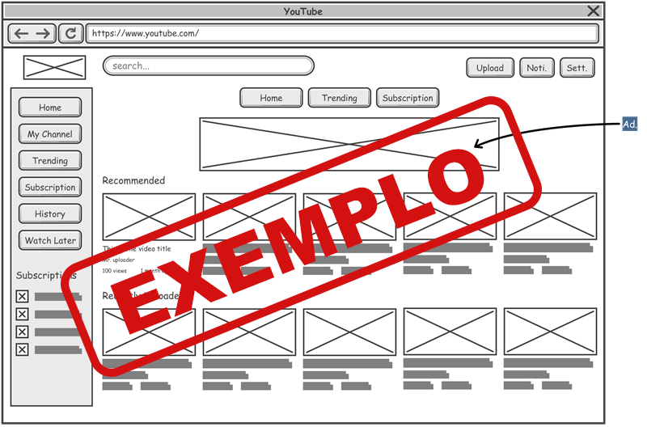
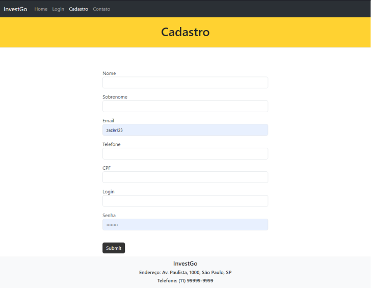
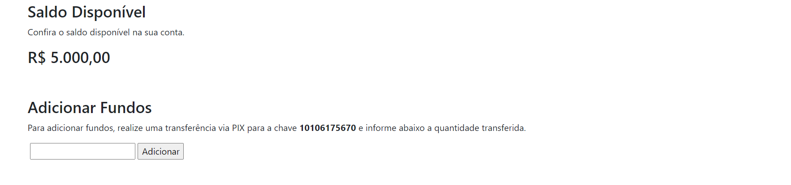
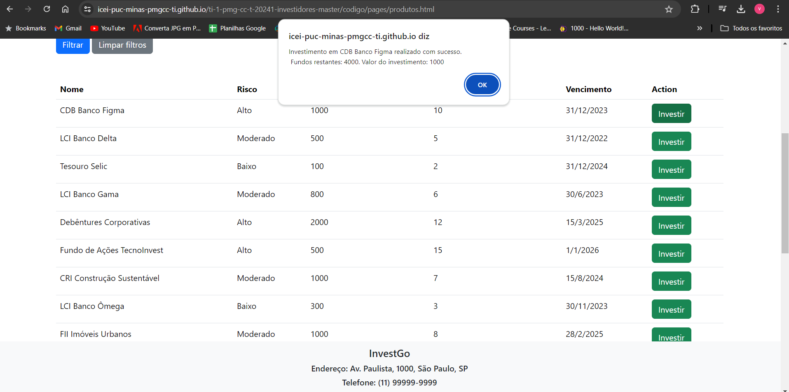
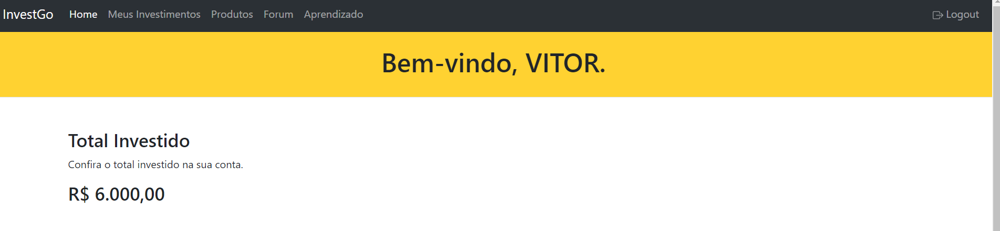
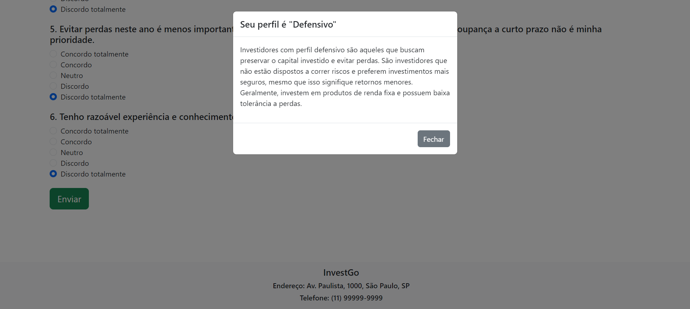
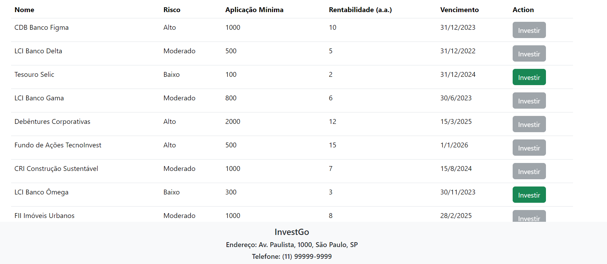
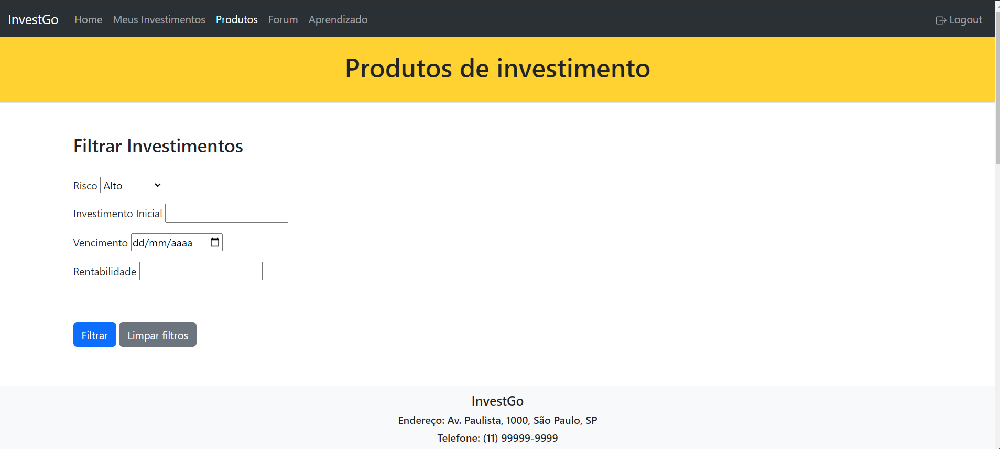
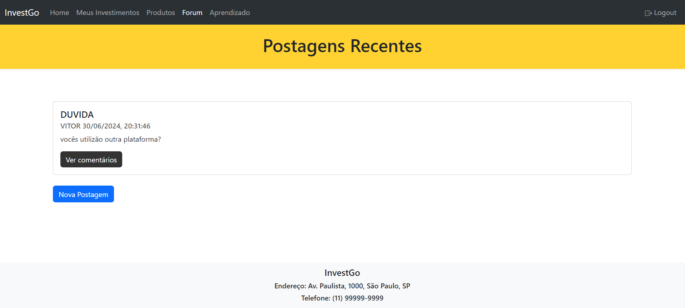
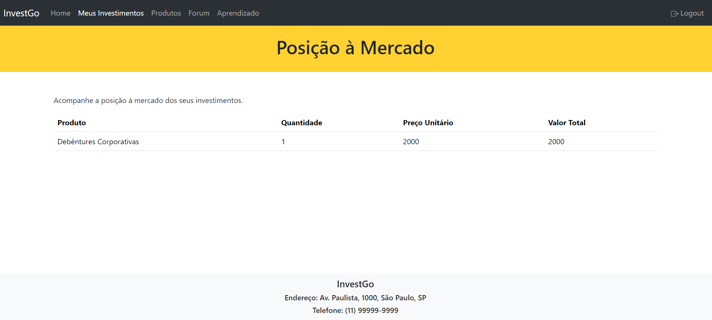

Introdução
Somos uma plataforma de investimentos que visa a transparência com o cliente, sendo sempre o
mais claro possível.
Informações Gerais
Contexto
Detalhes sobre o espaço de problema, justificativas e os objetivos do projeto.
Problema
Muitas corretoras de investimento são criticadas por priorizarem o lucro imediato em detrimento do bem-estar financeiro dos investidores. Isso se reflete em recomendações enviadas que frequentemente promovem produtos financeiros inadequados, como fundos com gestão questionável ou taxas elevadas, que não se alinham com o perfil de risco e os objetivos individuais dos investidores.
Objetivos
Criar um sistema que permita aos usuários inserir informações detalhadas sobre sua idade, ocupação, objetivos financeiros, renda e tolerância ao risco. Implementar algoritmos que avaliem essas informações para gerar um perfil de investimento personalizado para cada usuário.
2 - Implementar um sistema de recomendações personalizadas: Basear-se na avaliação do perfil do usuário para oferecer recomendações de investimento que estejam alinhadas com seus objetivos financeiros e tolerância ao risco. Garantir que as recomendações sejam imparciais e livres de conflitos de interesse, priorizando sempre os interesses financeiros dos usuários.
O objetivo do projeto é desenvolver um software para solucionar o problema da oferta de recomendações de investimento enviesadas por corretoras, proporcionando aos investidores acesso a recomendações imparciais e personalizadas que considerem seus objetivos financeiros, tolerância ao risco e situação financeira atual.
Justificativa
1 - Proteção dos Investidores: Evitar que investidores, especialmente os menos experientes, sejam prejudicados por recomendações tendenciosas.
2 - Acesso à Informação de Qualidade: Suprir a carência de ferramentas acessíveis que ofereçam informações e educação sobre investimentos.
3 - Promoção da Transparência: Restabelecer a confiança dos investidores no mercado financeiro ao oferecer uma plataforma sem conflitos de interesse.
A falta de transparência e de orientação imparcial por parte das corretoras de investimento é um problema significativo que pode levar os investidores a tomarem decisões financeiras inadequadas. Corretoras frequentemente priorizam seus próprios interesses financeiros ao oferecer recomendações, resultando em uma alocação de recursos ineficiente e potencialmente prejudicial aos investidores. Essa prática aumenta o risco de perdas financeiras e reduz a confiança dos investidores no mercado.
Público-alvo
A plataforma de investimentos destina-se a investidores de todos os níveis de experiência, incluindo iniciantes que buscam orientações claras e imparciais, profissionais de diferentes idades que desejam construir uma base financeira sólida ou garantir uma renda passiva, e pequenos e médios empresários que procuram otimizar os retornos de seus investimentos sem comprometer a segurança financeira.
Concepção (Design Thinking)
Detalhes do processo de discovery do projeto.
Apresente o processo de discovery do projeto. Com foco na experiência do usuário, esse processo abrange a compreensão do contexto do problema e das características do usuário, a definição do problema, a geração de ideias, a prototipagem e a elaboração de uma proposta de solução
Processo de Design Thinking
O arquivo que se segue apresenta o resultado desse processo.
Apresente o processo de Design Thinking realizado pelo grupo e documentado por meio do software Miro. No documento apresentado, devem ser incluídos: (1) a matriz CSD, (2) o mapa de stakeholders, (3) as personas, (4) as respectivas propostas de valor e (5) o processo de ideação identificando as ideias levantadas e sua priorização.
Especificações do Projeto
Documentação das especificações do projeto.
Apresente as especificações do projeto, incluindo as histórias de usuário e os requisitos funcionais e não funcionais.
Histórias de Usuários
Com base na análise das personas foram identificadas as seguintes histórias de usuários:
Apresente aqui as histórias de usuário que são relevantes para o projeto de sua solução. As Histórias de Usuário consistem em uma ferramenta poderosa para a compreensão e elicitação dos requisitos funcionais e não funcionais da sua aplicação. Se possível, agrupe as histórias de usuário por contexto, para facilitar consultas recorrentes à essa parte do documento.
EU COMO...PERSONA |
QUERO/PRECISO...FUNCIONALIDADE |
PARA...MOTIVO/VALOR |
|---|---|---|
| Arthur | Informações confiaveis | Para conseguir investir por mim mesmo no futuro |
| Arthur | Local de gestão | Para ter sobre controle os ativos que possuo |
| Walter | Interface de facil uso | Para conseguir utilizar a plataforma em ajuda |
| Cristina | Sistema de autenticação | Para poder confiar meu dinheiro na plataforma |
| Cristina | Boas recomedações | Para aumentar meu patrimônio |
Requisitos
As tabelas que se seguem apresentam os requisitos funcionais e não funcionais que detalham o escopo do projeto.
Com base nas Histórias de Usuário, enumere os requisitos da sua solução. Classifique esses requisitos em dois grupos:
- Requisitos Funcionais (RF): correspondem a uma funcionalidade que deve estar presente na plataforma (ex: cadastro de usuário).
- Requisitos Não Funcionais (RNF): correspondem a uma característica técnica, seja de usabilidade, desempenho, confiabilidade, segurança ou outro (ex: suporte a dispositivos iOS e Android).
Lembre-se que cada requisito deve corresponder à uma e somente uma característica alvo da sua solução. Além disso, certifique-se de que todos os aspectos capturados nas Histórias de Usuário foram cobertos.
Requisitos Funcionais
| ID | Descrição do Requisito | Prioridade |
|---|---|---|
| RF-001 | Permitir que o usuário crie um cadastro | ALTA |
| RF-002 | Criar um perfil de investidor | ALTA |
| RF-003 | Deve ter invetimentos que se enquadram no perfil do usuario | ALTA |
| RF-004 | Ter uma pagina para ensinar sobre investimentos | BAIXA |
| RF-005 | Atualizar a carteira do usuario automaticamente ao investir em um ativo | MÉDIA |
| RF-006 | O sistema deve ser imparcial com as recomendações | ALTA |
| RF-007 | Deve haver um canal de suporte ao usuario | ALTA |
Requisitos Não-Funcionais
| ID | Descrição do Requisito | Prioridade |
|---|---|---|
| RNF-001 | Todos os dados deve ser armazenados contra acesso não autorizado | ALTA |
| RNF-002 | Deve ser capaz de lidar com um aumento de numero de usuários | MÉDIA |
| RNF-003 | O sistema deve ser estavel, com tempo de inatividade mínimos | ALTA |
| RNF-004 | O sistema deve der reponsivo para rodar em multiplos dispositivos | MÉDIA |
| RNF-005 | A interface do usuário deve ser intuitiva e de facil utilização | MÉDIA |
| RNF-006 | O codigo-fonte e a arquitertura da plataforma devem ser bem documentados e modularizados, facilitando a manutenção e permitindo futuras extensões e atualizações | MÉDIA |
| RNF-007 | A resposta do sistema às solicitações dos usuários deve ser rápida e eficiente | ALTA |
| RNF-008 | A solução deve estar em conformidade com todas as regulamentações e leis pertinentes relacionadas à proteção de dados, segurança financeira e práticas comerciais justas | ALTA |
| RNF-009 | O sistema deve ser capaz de integrar-se facilmente com sistemas externos | ALTA |
Projeto de Interface
Artefatos relacionados com a interface e a interacão do usuário na proposta de solução.
Apresente a ideia de interface que está sendo prevista para o projeto. Inclua os wireframes, o user/screen flow e o protótipo interativo.
User/Screen Flow e Protótipo interativo
Artefatos relacionados com a interface e a interacão do usuário na solução proposta.
O fluxo de usuário (User Flow) é uma técnica que permite ao desenvolvedor mapear todo fluxo de
telas do site ou app. Essa técnica funciona para alinhar os caminhos e as possíveis ações que o
usuário pode fazer junto com os membros de sua equipe. 
Um protótipo interativo apresenta o projeto de interfaces e permite ao usuário navegar pelas
funcionalidades como se estivesse lidando com o software pronto. Veja o exemplo a seguir.
...... COLOQUE AQUI O DIAGRAMA DE USER FLOW E O LINK PARA O PROTÓTIPO INTERATIVO ......
Wireframes
Protótipo de telas do sistema em baixa fidelidade (rascunhos).
Os Wireframes são protótipos das telas da aplicação usados em design de interface para sugerir a estrutura de um site web e seu relacionamentos entre suas páginas. Um wireframe web é uma ilustração semelhante ao layout de elementos fundamentais na interface. 
...... COLOQUE AQUI OS PROTÓTIPO DE TELAS E SUA DESCRIÇÃO ......
Metodologia
Detalhes sobre a organização do grupo e o ferramental empregado.
Nesta parte do documento, você deve apresentar a metodologia adotada pelo grupo, descrevendo o processo de trabalho baseado nas metodologias ágeis, a divisão de papéis e tarefas, as ferramentas empregadas e como foi realizada agestão de configuração do projeto via GitHub.
Coloque detalhes sobre o processo de Design Thinking e a implementação do Framework Scrum seguido pelo grupo. O grupo poderá fazer uso de ferramentas on-line para acompanhar o andamento do projeto, a execução das tarefas e o status de desenvolvimento da solução.
Ferramentas
Relação de ferramentas empregadas pelo grupo durante o projeto.
Liste as ferramentas empregadas no desenvolvimento do projeto, justificando a escolha delas, sempre que possível. Inclua itens como: (1) Editor de código, ferramentas de comunicação, ferramentas de diagramação, plataformas de hospedagem, entre outras.
| Ambiente | Plataforma | Link de Acesso |
|---|---|---|
| Processo de Design Thinking | Miro | https://miro.com/app/board |
| Repositório de código | GitHub | https://github.com/codigo |
| Hospedagem do site | GitHub | https://github.com/site |
| Protótipo Interativo | MavelApp ou Figma | https://figma.com/design |
Gestão do Projeto
Divisão de papéis no grupo e apresentação da estrutura da ferramenta de controle de tarefas (Kanban).
Apresente a divisão de papéis e tarefas entre os membros do grupo. Informe quem é o Scrum Master, o Product Owner e os desenvolvedores. Informe também quem é o responsável pela documentação do projeto.
Apresente o quadro de gerenciamento do time (Kanban), seu formato e as experiências na utilização dessa ferramenta (GitHub Projects)
Scrum Master: Pedro Gabriel Amorim Soares
Product owner: André Henriques Parreiras
Desenvolvedores: André Henriques, Mateus Martins, Pedro Gabriel Amorin, Vitor Leite
Documentações: Mateus Martins Parreiras e Vitor Leite Setragni
Controle de Versão
Estrutura do fluxo de trabalho no ambiente do GitHub.
Discuta como a configuração do projeto foi feita na ferramenta de versionamento (GitHub). Exponha
como a gerência de tags, merges, commits e branchs é realizada. Discuta como a gerência de issues foi
realizada.

...... COLOQUE AQUI O SEU TEXTO ......
Solução
Esta seção apresenta todos os detalhes da solução criada no projeto.
Apresente cada uma das funcionalidades que a aplicação fornece tanto para os usuários quanto aos administradores da solução.
Inclua, para cada funcionalidade, itens como: (1) titulos e descrição da funcionalidade; (2) Estrutura de dados associada; (3) o detalhe sobre as instruções de acesso e uso.
Video do Projeto
O vídeo a seguir traz uma apresentação do problema que a equipe está tratando e a proposta de solução.
O video de apresentação é voltado para que o público externo possa conhecer a solução. O formato é livre, sendo importante que seja apresentado o problema e a solução numa linguagem descomplicada e direta.
Utilize o recurso de compartilhamento via embed e inclua o vídeo logo abaixo.
...... COLOQUE AQUI O SEU VIDEO ......
Funcionalidades
Esta seção apresenta as funcionalidades da solução.
Apresente cada uma das funcionalidades que a aplicação fornece tanto para os usuários quanto aos administradores da solução.
Inclua, para cada funcionalidade, itens como: (1) titulos e descrição da funcionalidade; (2) Estrutura de dados associada; (3) o detalhe sobre as instruções de acesso e uso.
Funcionalidade 1 - Cadastro e Login
Permite o cadastro e o login do usuário.
- Estrutura de dados: Cadastro/Login
- Instruções de acesso:
- Abra o site e efetue o cadastro
- Acesse a aba de login e efetue o login

Funcionalidade 2 - Adicionar fundos para o software
Permite que o usuário adicione fundos para investir.
- Estrutura de dados: Adicionar fundos
- Instruções de acesso:
- Abra o site e efetue o login
- Acesse a aba home, digite a quantidade que deseja e clique em adicionar

Funcionalidade 3 - Utilizar fundos para investir
Permite que o usuário utilize seus fundos para comprar ativos.
- Estrutura de dados: Utilizar fundos
- Instruções de acesso:
- Abra o site e efetue o login
- Acesse a aba produtos, e selecione os ativos que voce deseja comprar

Funcionalidade 4 - Mostrar total investido
Permite que o usuário verifique quanto de dinheiro ele tem investido
- Estrutura de dados: Verificar fundos
- Instruções de acesso:
- Abra o site e efetue o login
- Acesse a aba home

Funcionalidade 5 - Questionario de perfil de investidor
Permite que o usuário saiba que tipo de investidor ele é
- Estrutura de dados: Perfil de investidor
- Instruções de acesso:
- Abra o site e efetue o login
- Acesse a aba home e clique em alterar perfil

Funcionalidade 6 - Comprar ativos baseados no seu perfil de investidor
Remove a possibilidade do usuário comprar um ativo fora do seu perfil
- Estrutura de dados: Comprar ativos
- Instruções de acesso:
- Abra o site e efetue o login
- Acesse a aba home e clique em alterar perfil
- Acesse a aba produtos

Funcionalidade 7 - Filtrar tipos de investimento
Permite que o usuário filtre qual tipo de investimento ele quer ver
- Estrutura de dados: Filtro
- Instruções de acesso:
- Abra o site e efetue o login
- Acesse a aba home e clique em alterar perfil

Funcionalidade 8 - Fórum de conversa
Permite que o usuário comente e faça publicações dentro do fórum
- Estrutura de dados: Fórum
- Instruções de acesso:
- Abra o site e efetue o login
- Acesse a aba fórum

Funcionalidade 9 - Atualização automática da sua carteira com os ativos adquiridos
Permite que o usuário verifique quais ativos ele comprou, mostrando preço e quantidade
- Estrutura de dados: Meus investimentos
- Instruções de acesso:
- Abra o site e efetue o login
- Acesse a aba meus investimentos

Estruturas de Dados
Descrição das estruturas de dados utilizadas na solução com exemplos no formato JSON.
Produtos de investimento
Produtos
[
{
name: "CDB Banco Figma",
risk: "Alto",
minimumInvestment: 1000,
return: 10,
maturity: "2023-12-31",
},
{
name: "LCI Banco Delta",
risk: "Moderado",
minimumInvestment: 500,
return: 5,
maturity: "2022-12-31",
},
...]
Usuários
Registro dos usuários do sistema utilizados para login e para o perfil do sistema
[
{
"nome": "pedro",
"surname": "soares",
"email": "email@gmail.com",
"phone": "12412512512",
"cpf": "332124515125",
"login": "pgbhz",
"password": "123",
"funds": 5423400,
"investorProfile": "defensive",
"investments": [
{
"name": "Tesouro Selic",
"risk": "Baixo",
"amount": 100
},
{
"name": "LCI Banco Ômega",
"risk": "Baixo",
"amount": 300
}
]
},
...
]
Posts do forum
Posts efetuados no forum
[
{
"title": "Investimento seguro?",
"author": "pedro",
"date": "6/29/2024, 5:10:59 PM",
"content": "Estou em dúvida se debêntures das casas bahia são seguras...",
"comments": [
{
"author": "pedro",
"date": "6/29/2024, 5:11:07 PM",
"content": "Alguém pode me ajudar?"
}
]
}
]
Perfil de investidor
Questionario para entendermos melhor quem são nossos clientes.
{
"question-1": "Quero enriquecer o mais rápido possível.",
"question-2": "Preservar meu patrimônio contra inflação.",
"question-3": "Aumentar meu patrimônio assumindo riscos calculados."
}
Módulos e APIs
Esta seção apresenta os módulos e APIs utilizados na solução.
Images:
Scripts:
FAQ
Perguntas e respostas comuns associadas ao projeto.
Referências Bibliográficas
Esta seção apresenta as referências bibliográficas utilizadas no projeto.
● Bodie, Z., Kane, A., & Marcus, A. J. (2018). Investments. McGraw-Hill Education. ● Malkiel, B. G. (2015).
A Random Walk Down Wall Street: The Time-Tested Strategy for Successful Investing. W. W. Norton & Company.
● Taleb, N. N. (2007). The Black Swan: The Impact of the Highly Improbable. Random House Trade Paperbacks.
● Reilly, F. K., & Brown, K. C. (2018). Investment Analysis and Portfolio Management. Cengage Learning.
● Graham, B., & Zweig, J. (2006). The Intelligent Investor: The Definitive Book on Value Investing.
HarperBusiness.
● Bernstein, W. J. (2014). The Four Pillars of Investing: Lessons for Building a Winning Portfolio.
McGraw-Hill Education.
● Hull, J. C. (2017). Options, Futures, and Other Derivatives. Pearson Education.
● Swensen, D. F. (2017). Pioneering Portfolio Management: An Unconventional Approach to Institutional
Investment. Free Press.
● Damodaran, A. (2012). Investment Valuation: Tools and Techniques for Determining the Value of any Asset.
Wiley.
● O'Reilly, T. (2005). What Is Web 2.0: Design Patterns and Business Models for the Next Generation of
Software. O'Reilly Media.